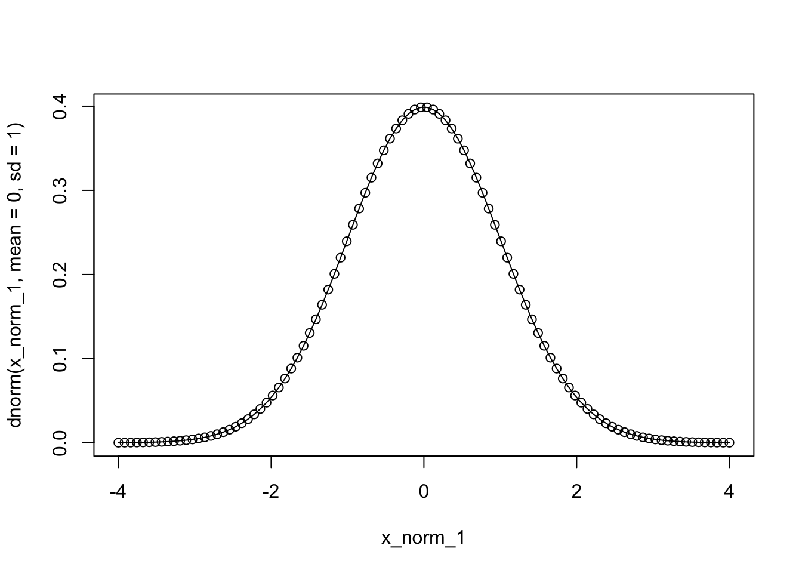
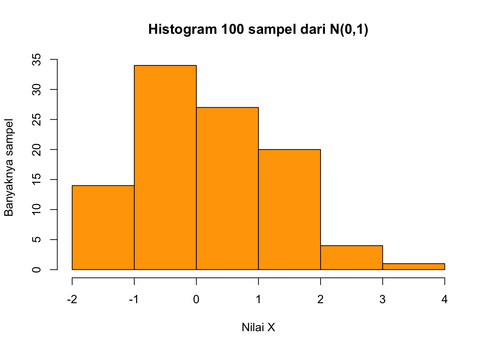

pi[1] 3.141593Continuous Distributions in R, Distributions in Excel
Kembali ke Pengantar Sains Data
Melanjutkan dari pertemuan sebelumnya tentang distribusi diskirt di R, pada pertemuan kali ini, kita akan membahas tentang beberapa distribusi kontinu di R, tepatnya distribusi uniform (kontinu) dan distribusi normal, baik dengan base R ataupun dengan distr. Kemudian, kita juga akan membahas tentang distribusi probabilitas di Excel, baik diskrit maupun kontinu, terutama cara menghasilkan data random menggunakan Analysis ToolPak.
Sebenarnya ada banyak distribusi kontinu. Namun, sesuai dengan batasan materi kuliah Pengantar Sains Data, kita hanya akan membahas dua distribusi kontinu, yaitu
distribusi uniform (kontinu), dan
distribusi normal.
Kalian akan mempelajari lebih banyak distribusi, baik distribusi diskrit maupun distribusi kontinu, serta berbagai macam “penggabungannya”, di mata kuliah Statistika Matematika 1.
Seperti biasa, kita masih bermain dengan fungsi d…, p,…, q…, dan r… yang bisa kita ingat kembali:
d… melambangkan PDF
p… melambangkan CDF
q… melambangkan inverse CDF atau fungsi kuantil (quantile function)
r… melambangkan RNG (random number generator)
Sesuai namanya, distribusi normal sering dijumpai di kehidupan sehari-hari; tidak jarang terjadi, persebaran berbagai data, yang awalnya terkesan acak, ternyata mendekati distribusi normal.
Distribusi normal memiliki dua parameter, yaitu
rata-rata atau mean \(\mu\) (mu)
variansi atau variance \(\sigma^2\) (sigma kecil, dikuadratkan), yang harus taknegatif (nonnegative)
Catatan: sigma besar adalah \(\Sigma\) yang biasa kita gunakan untuk notasi penjumlahan atau sumasi.
Perhatikan bahwa rata-rata termasuk ukuran pemusatan data, sedangkan variansi termasuk ukuran persebaran data (juga disebut keragaman data). Nilai kedua parameter tersebut bisa diubah-ubah sesuai keperluan. Dengan demikian, distribusi normal bisa cukup fleksibel menyesuaikan dengan berbagai macam data.
Apabila suatu variabel acak \(X\) mengikuti distribusi normal, biasa ditulis
\[X \sim N(\mu, \sigma^2)\]
Namun, daripada berdasarkan rata-rata dan variansi, terkadang suatu distribusi normal ditentukan berdasarkan rata-rata dan simpangan baku (standard deviation), biasa disingkat sd, std, stdev, atau stddev, dan biasa dilambangkan \(\sigma\), yang merupakan akar dari variansi. Di R, standard deviation biasa dilambangkan sd.
Perbedaan antara variansi dan standard deviation hanyalah masalah kuadrat. Berhati-hati saja.
Selain itu, perlu diingat bahwa penulisan
\[X \sim N(\mu, \sigma^2)\]
selalu menggunakan variansi yaitu \(\sigma^2\), daripada standard deviation.
Support dari distribusi normal adalah keseluruhan garis bilangan real (the real line), yaitu interval buka \((-\infty, \infty)\)
Untuk \(-\infty < x < \infty\), PDF dari distribusi normal bisa ditulis
\[n(x; \mu, \sigma) = \frac{1}{\sigma\sqrt{2\pi}}e^{-\frac{1}{2}\frac{(x-\mu)^2}{\sigma^2}}\]
Perhatikan, ada konstanta \(\pi\) (pi) dan konstanta Euler \(e\). Kedua konstanta tersebut tersedia di R:
pi[1] 3.141593exp(1)[1] 2.718282Sebenarnya, exp adalah fungsi eksponensial \(e^x\).
Distribusi normal standar (standard normal distribution) adalah distribusi normal istimewa, yang memiliki parameter \(\mu = 0\) dan parameter \(\sigma = 1\), atau bisa dilambangkan \(N(0,1)\).
dnorm(1.3,
mean = 0,
sd = 1)[1] 0.1713686Untuk plotting, kita tidak perlu menggunakan keseluruhan support (mustahil juga), karena untuk nilai-nilai yang tidak dekat dengan nilai tengah atau rata-rata, probabilitasnya hampir nol. Oleh karena itu, kita cukup memilih interval yang memuat titik-titik yang dekat dengan rata-rata, misal \(0 \pm 4\), tidak perlu terlalu besar.
x_norm_1 <- seq(0-4, 0+4, length = 100)
x_norm_1 [1] -4.00000000 -3.91919192 -3.83838384 -3.75757576 -3.67676768 -3.59595960
[7] -3.51515152 -3.43434343 -3.35353535 -3.27272727 -3.19191919 -3.11111111
[13] -3.03030303 -2.94949495 -2.86868687 -2.78787879 -2.70707071 -2.62626263
[19] -2.54545455 -2.46464646 -2.38383838 -2.30303030 -2.22222222 -2.14141414
[25] -2.06060606 -1.97979798 -1.89898990 -1.81818182 -1.73737374 -1.65656566
[31] -1.57575758 -1.49494949 -1.41414141 -1.33333333 -1.25252525 -1.17171717
[37] -1.09090909 -1.01010101 -0.92929293 -0.84848485 -0.76767677 -0.68686869
[43] -0.60606061 -0.52525253 -0.44444444 -0.36363636 -0.28282828 -0.20202020
[49] -0.12121212 -0.04040404 0.04040404 0.12121212 0.20202020 0.28282828
[55] 0.36363636 0.44444444 0.52525253 0.60606061 0.68686869 0.76767677
[61] 0.84848485 0.92929293 1.01010101 1.09090909 1.17171717 1.25252525
[67] 1.33333333 1.41414141 1.49494949 1.57575758 1.65656566 1.73737374
[73] 1.81818182 1.89898990 1.97979798 2.06060606 2.14141414 2.22222222
[79] 2.30303030 2.38383838 2.46464646 2.54545455 2.62626263 2.70707071
[85] 2.78787879 2.86868687 2.94949495 3.03030303 3.11111111 3.19191919
[91] 3.27272727 3.35353535 3.43434343 3.51515152 3.59595960 3.67676768
[97] 3.75757576 3.83838384 3.91919192 4.00000000plot(x_norm_1,
dnorm(x_norm_1, mean = 0, sd = 1),
type = 'o')
Contoh distribusi normal yang lain: \(N(2,5)\)
dnorm(2.7,
mean = 2,
sd = 5)[1] 0.07901035Ternyata, nilai untuk distribusi normal dengan parameter lain bisa diperoleh dari distribusi normal standar, memanfaatkan yang namanya Z-score.
\[Z = \frac{X-\mu}{\sigma}\]
Namun, ketika menghitung PDF dan sudah memperoleh hasil dari distribusi normal standar, kita perlu membagi lagi hasilnya dengan standard deviation yang aslinya, karena ada masalah scaling (skala).
Misalnya, untuk \(X=2.7\) dan \(X \sim N(2,5)\),
\[Z = \frac{X-2}{5} = \frac{2.7-2}{5}\]
Namun, daripada sekadar menghitung
dnorm((2.7-2)/(5),
mean = 0,
sd = 1)[1] 0.3950517kita harus membagi lagi dengan standard deviation yang aslinya yaitu 5, sebagai berikut:
dnorm((2.7-2)/(5),
mean = 0,
sd = 1)/5[1] 0.07901035Bandingkan:
dnorm(2.7,
mean = 2,
sd = 5)[1] 0.07901035Sama, ya!
Untuk membuat plot dari \(N(2,5)\), kita buat titik-titik x_norm_2 sedemikian sehingga nilai-nilainya berada di sekitar rata-rata 2, tetapi dengan interval yang lebih luas, misal \(2 \pm 20\), karena standard deviation yang lebih besar dibandingkan dengan membuat plot \(N(0,1)\) tadi.
x_norm_2 <- seq(2-20, 2+20, length = 100)
x_norm_2 [1] -18.0000000 -17.5959596 -17.1919192 -16.7878788 -16.3838384 -15.9797980
[7] -15.5757576 -15.1717172 -14.7676768 -14.3636364 -13.9595960 -13.5555556
[13] -13.1515152 -12.7474747 -12.3434343 -11.9393939 -11.5353535 -11.1313131
[19] -10.7272727 -10.3232323 -9.9191919 -9.5151515 -9.1111111 -8.7070707
[25] -8.3030303 -7.8989899 -7.4949495 -7.0909091 -6.6868687 -6.2828283
[31] -5.8787879 -5.4747475 -5.0707071 -4.6666667 -4.2626263 -3.8585859
[37] -3.4545455 -3.0505051 -2.6464646 -2.2424242 -1.8383838 -1.4343434
[43] -1.0303030 -0.6262626 -0.2222222 0.1818182 0.5858586 0.9898990
[49] 1.3939394 1.7979798 2.2020202 2.6060606 3.0101010 3.4141414
[55] 3.8181818 4.2222222 4.6262626 5.0303030 5.4343434 5.8383838
[61] 6.2424242 6.6464646 7.0505051 7.4545455 7.8585859 8.2626263
[67] 8.6666667 9.0707071 9.4747475 9.8787879 10.2828283 10.6868687
[73] 11.0909091 11.4949495 11.8989899 12.3030303 12.7070707 13.1111111
[79] 13.5151515 13.9191919 14.3232323 14.7272727 15.1313131 15.5353535
[85] 15.9393939 16.3434343 16.7474747 17.1515152 17.5555556 17.9595960
[91] 18.3636364 18.7676768 19.1717172 19.5757576 19.9797980 20.3838384
[97] 20.7878788 21.1919192 21.5959596 22.0000000plot(x_norm_2,
dnorm(x_norm_2, mean = 2, sd = 5),
type = 'o')
Untuk distribusi kontinu, perhitungan probabilitas harus melalui CDF, sedangkan PDF hanya menggambarkan bentuk distribusi.
Tidak seperti distribusi diskrit, PDF distribusi kontinu di \(\mathbf{x}\) TIDAK SAMA DENGAN \(\mathbf{\text{Pr}(X=x)}\). Bahkan, di distribusi kontinu, untuk tiap \(x\) selalu berlaku
\[\text{Pr}(X=x) = 0\]
Mengapa demikian? Misalnya, untuk distribusi normal, kita ingin menghitung \(\text{Pr}(X=2.7)\). Artinya, kita meminta probabilitas bahwa nilai yang kita peroleh adalah tepat 2.7, tidak boleh meleset sedikitpun. Kalau kita memperoleh misalnya 2.7000000001, itu sudah dianggap angka yang berbeda. Tentunya, memperoleh persis suatu angka tertentu sangat tidak realistis, sehingga probabilitasnya adalah nol.
Dengan demikian, untuk distribusi kontinu, probabilitas di tepat satu titik, di titik apapun, itu selalu nol.
Kalau begitu, apakah probabilitas bahwa kita dapat nilai apapun sama sekali itu adalah nol, sehingga tidak ada yang mungkin? Tidak juga. Mungkin terdengar aneh. Namun, sebenarnya, untuk distribusi kontinu, daripada menghitung probabilitas memperoleh tepat suatu nilai tertentu, kita biasa menghitung probabilitas memperoleh nilai di interval tertentu. Dengan begitu, barulah probabilitasnya taknol.
Sebagaimana di distribusi diskrit, kita bisa menghitung probabilitas untuk rentang atau interval tertentu menggunakan CDF. Oleh karena itulah, perhitungan probabilitas untuk distribusi kontinu selalu menggunakan CDF, tidak pernah menggunakan PDF.
pnorm(1.96,
mean = 0,
sd = 1)[1] 0.9750021plot(x_norm_1,
pnorm(x_norm_1, mean = 0, sd = 1),
type = 'o')
Contoh:
Misalkan \(X\) merupakan variabel acak yang berdistribusi normal dengan \(\mu = 50\) dan variansi standard deviation \(\sigma = 10\). Hitunglah
\[\text{Pr}(45 < X < 62)\]
Jawab:
Perhatikan bahwa
\[\begin{align*} \text{Pr}&(45 < X < 62) \\ &= \text{Pr}(X < 62) - \text{Pr}(X \leq 45) \\ &= \text{Pr}(X \leq 62) - \text{Pr}(X \leq 45) \end{align*}\]
karena
\[\begin{align*} \text{Pr}&(X < 62) \\ &= \text{Pr}(X \leq 62) - \text{Pr}(X = 62) \\ &= \text{Pr}(X \leq 62) - 0 \\ &= \text{Pr}(X \leq 62) \end{align*}\]
Sehingga, \(\text{Pr}(45 < X < 62)\) bisa dihitung dengan
\[\text{Pr}(X \leq 62) - \text{Pr}(X \leq 45)\]
yaitu selisih dua nilai CDF:
pnorm(62, mean = 50, sd = 10) -
pnorm(45, mean = 50, sd = 10)[1] 0.5763928Kesimpulannya,
\[\text{Pr}(45 < X < 62) \approx 0.5763928\]
Cara lain, kita bisa juga memanfaatkan Z-score. Misalkan
\[Z = \frac{X-\mu}{\sigma} = \frac{X-50}{10}\]
Maka
\[\begin{align*} \text{Pr}&(45 < X < 62) \\ &= \text{Pr}\left(\frac{45-50}{10} < \frac{X-50}{10} < \frac{62-50}{10}\right) \\ &= \text{Pr}\left(\frac{45-50}{10} < Z < \frac{62-50}{10}\right) \\ &= \text{Pr}\left(Z \leq \frac{62-50}{10}\right) - \text{Pr}\left(Z \leq \frac{45-50}{10}\right) \end{align*}\]
Sehingga kita tinggal menghitung:
pnorm((62-50)/10, mean = 0, sd = 1) -
pnorm((45-50)/10, mean = 0, sd = 1)[1] 0.5763928Daripada langsung mengetik sepanjang itu, kita juga bisa menghitung dulu
(62-50)/10[1] 1.2(45-50)/10[1] -0.5baru memasukkan,
\[\begin{align*} \text{Pr}&(45 < X < 62) \\ &= \text{Pr}\left(Z \leq \frac{62-50}{10}\right) - \text{Pr}\left(Z \leq \frac{45-50}{10}\right) \\ &= \text{Pr}\left(Z \leq 1.2\right) - \text{Pr}\left(Z \leq -0.5\right) \end{align*}\]
sehingga bisa dihitung
pnorm(1.2, mean = 0, sd = 1) -
pnorm(-0.5, mean = 0, sd = 1)[1] 0.5763928Apabila sewaktu-waktu kalian perlu menghitung ini tetapi tidak bisa mengakses R, kalian bisa memanfaatkan tabel normal standar (standard normal table), yaitu tabel yang mendata berbagai nilai CDF untuk distribusi normal standar yaitu \(N(0,1)\), dan kebetulan juga disebut tabel Z-score. Carilah nilai CDF untuk \(Z=1.2\) dan nilai CDF untuk \(Z=-0.5\), lalu hitung selisihnya.
Apabila menggunakan mean = 0 dan sd = 1, kalian juga bisa saja menganggap fungsi pnorm sebagai fungsi untuk memperoleh nilai pada tabel normal standar. Misalnya, nilai di \(Z=1.2\) adalah
pnorm(1.2, mean = 0, sd = 1)[1] 0.8849303dan nilai di \(Z=-0.5\) adalah
pnorm(-0.5, mean = 0, sd = 1)[1] 0.3085375Silakan bandingkan dengan tabel normal standar, yang misalnya bisa kalian temukan di lampiran buku pengantar statistik seperti karangan Walpole.
Misalkan diketahui \(X \sim N(0,1)\) dan
\[\text{Pr}(X \leq x) = 0.975\]
Bagaimana cara menentukan \(x\)?
Perhatikan bahwa, fungsi probabilitas seperti di atas melambangkan CDF, dan kita ingin mencari nilai \(x\) yang membuat nilai CDF menjadi 0.975. Caranya, kita bisa menggunakan inverse CDF atau quantile function, sebagai berikut.
qnorm(0.975,
mean = 0,
sd = 1)[1] 1.959964Ternyata, nilai \(x\) yang diinginkan sekitar 1.96.
Kalau ragu, kita bisa periksa dengan menghitung nilai CDF untuk \(x=1.96\)
pnorm(1.96,
mean = 0,
sd = 1)[1] 0.9750021Benar ya!
Tentunya, mean tidak harus nol dan sd tidak harus satu. Contohnya, apabila diketahui
\[X \sim N(2,5), \quad \text{Pr}(X=x) = 0.73\]
maka kita bisa memperoleh \(x\) dengan qnorm yaitu inverse CDF
qnorm(0.73, mean = 2, sd = 5)[1] 5.064065Sehingga \(x \approx 5.064\), yang bisa kita periksa dengan pnorm yaitu CDF
pnorm(5.064, mean = 2, sd = 5)[1] 0.7299957Cukup dekat.
set.seed(62)
n <- 100
random_normal_1 <- rnorm(n, mean = 0, sd = 1)
random_normal_1 [1] 0.801270126 0.284456708 -1.512796984 0.074637826 2.260744864
[6] 0.061994083 0.913783028 -1.201950117 0.096915709 -0.986658430
[11] -0.945597948 1.066644680 0.320424359 -1.547620322 -0.973418633
[16] -0.044839783 1.100497403 0.643893414 1.158084038 -0.104914360
[21] -1.392449727 1.018245804 0.826401081 1.289595050 -0.643231482
[26] -0.001173311 -1.948468606 0.680949495 0.274233523 -1.905682922
[31] -1.207395634 0.379645715 -0.832700980 -1.480467865 1.045205002
[36] 1.203374466 1.143497941 -0.798450844 0.713542224 0.014509402
[41] 1.065312134 -0.162379461 -0.733018312 0.283498988 -0.193434842
[46] 1.548665726 0.277543508 -0.769101533 1.571636889 1.300682395
[51] 0.049887057 -0.417278907 0.188247814 1.011823237 0.819801179
[56] 0.526496313 -1.473395423 -0.686042765 -0.374751726 1.149207414
[61] 0.309402632 -1.248579103 0.082461577 3.079093309 -1.043472726
[66] 2.608787079 -0.223155112 0.277967984 1.341954354 -1.037490047
[71] -0.382641299 1.068881533 -1.840465410 -0.557030007 0.566990033
[76] 2.232051009 -0.309609288 1.386739199 -0.428271844 -0.655081698
[81] -0.323856515 -0.071806893 -0.604127858 -0.117262945 -0.356753720
[86] 1.342047477 -0.626166768 0.374192123 -0.370055470 -0.361204965
[91] 0.773178206 -1.322378159 2.213237411 1.095148834 -0.155491552
[96] 1.086000546 -0.446262004 0.399248471 -0.553159488 -0.596143996Untuk distribusi kontinu, tidak mungkin kita buat bar plot, karena banyaknya elemen di support sudah infinite (tak berhingga), bahkan uncountable (tak terhitung).
Kita bisa membuat histogram,
hist(random_normal_1)
yang kemudian bisa kita kostumisasi (maksudnya customize) atau ubah-ubah opsinya:
hist(random_normal_1,
breaks = 7,
main = "Histogram 100 sampel dari N(0,1)",
xlab = "Nilai X",
ylab = "Banyaknya sampel",
col = "orange")
Untuk distribusi kontinu, selain membuat histogram, kita juga bisa membuat yang namanya density plot. Intinya, ini adalah perkiraan bentuk distribusi kontinu berdasarkan data yang diberikan. Dalam hal ini, dengan data random yang kita miliki, kita bisa mencoba membentuk kembali perkiraan bentuk distribusi aslinya, yakni distribusi normal.
plot(density(random_normal_1),
main = "density plot: normal, mean 0, sd 1")
Cukup dekat, ya! Memang tidak sempurna, karena penarikan data atau sampling yang kita lakukan bersifat random, tidak menentu.
Kita baru mencoba menarik data random dari \(N(0,1)\), tapi tentunya kita bisa melakukan langkah yang sama hingga plotting untuk parameter lain, misalnya rata-rata \(\mu=10\) dan standard deviation \(\sigma=8\).
random_normal_2 <- rnorm(n, mean = 10, sd = 8)hist(random_normal_2,
main = "Histogram 100 sampel dari N(10,8)")
plot(density(random_normal_2),
main = "density plot: normal, mean 10, sd 8")
Misalkan kita membuat bar plot dari \(X \sim \text{Binom}(15, 0.4)\), yaitu distribusi binomial dengan banyaknya percobaan \(n=15\) dan probabilitas sukses \(p=0.4\), misalnya dengan base R,
x_binom <- seq(0, 15, by = 1)
y_binom <- dbinom(x_binom, size = 15, prob = 0.4)
barplot(height = y_binom,
names.arg = x_binom)
atau dengan ggplot2:
library("ggplot2")x_binom <- seq(0, 15, by = 1)
y_binom <- dbinom(x_binom, size = 15, prob = 0.4)
df_binom <- data.frame(x = x_binom, Probabilitas = y_binom)ggplot(df_binom, aes(x = x, y = Probabilitas)) +
geom_bar(stat = "identity", fill = "blue")
Kemudian, kita bisa menghitung ekspektasi dan standard deviation dari \(X \sim \text{Binom}(15, 0.4)\) yaitu
\[\begin{align*} \text{E}[X] &= np \\ &= (15)(0.4) = 6 \end{align*}\]
\[\begin{align*} \text{Var}[X] &= npq = np(1-q) \\ &= (15)(0.4)(1-0.4) = (15)(0.4)(0.6) \\ &= 3.6 \end{align*}\]
\[\begin{align*} \sigma &= \sqrt{\sigma^2} = \sqrt{\text{Var}[X]} \\ &= \sqrt{3.6} = \frac{3}{5}\sqrt{10} \end{align*}\]
lalu dengan informasi tersebut, kita timpa bar plot binomial dengan plot PDF distribusi normal \(N\left(\mu, \sigma^2\right) = N(6, 3.6)\) sebagai berikut:
x_norm_3 <- seq(0, 15, length = 100) # rentangnya sama dengan x_binom
y_norm_3 <- dnorm(x_norm_3, mean = 6, sd = sqrt(3.6))
df_norm <- data.frame(x = x_norm_3, Densitas = y_norm_3)ggplot(df_binom, aes(x = x, y = Probabilitas)) +
geom_bar(stat = "identity", fill = "blue") +
geom_line(data = df_norm, aes(x = x, y = Densitas))
Wah, ternyata sangat mendekati, ya! Distribusi normal bisa digunakan untuk menghampiri distribusi binomial, yaitu
\[\text{Binom}(n,p) \approx \text{N}\left(np,npq\right)\]
dan semakin besar nilai \(n\), semakin akurat.
dunif(40, min = 25, max = 100)[1] 0.01333333x_unif <- seq(25-5, 100+5, length = 100)
x_unif [1] 20.00000 20.85859 21.71717 22.57576 23.43434 24.29293 25.15152
[8] 26.01010 26.86869 27.72727 28.58586 29.44444 30.30303 31.16162
[15] 32.02020 32.87879 33.73737 34.59596 35.45455 36.31313 37.17172
[22] 38.03030 38.88889 39.74747 40.60606 41.46465 42.32323 43.18182
[29] 44.04040 44.89899 45.75758 46.61616 47.47475 48.33333 49.19192
[36] 50.05051 50.90909 51.76768 52.62626 53.48485 54.34343 55.20202
[43] 56.06061 56.91919 57.77778 58.63636 59.49495 60.35354 61.21212
[50] 62.07071 62.92929 63.78788 64.64646 65.50505 66.36364 67.22222
[57] 68.08081 68.93939 69.79798 70.65657 71.51515 72.37374 73.23232
[64] 74.09091 74.94949 75.80808 76.66667 77.52525 78.38384 79.24242
[71] 80.10101 80.95960 81.81818 82.67677 83.53535 84.39394 85.25253
[78] 86.11111 86.96970 87.82828 88.68687 89.54545 90.40404 91.26263
[85] 92.12121 92.97980 93.83838 94.69697 95.55556 96.41414 97.27273
[92] 98.13131 98.98990 99.84848 100.70707 101.56566 102.42424 103.28283
[99] 104.14141 105.00000plot(x_unif,
dunif(x_unif, min = 25, max = 100),
type = 'o')
punif(40, min = 25, max = 100)[1] 0.2qunif(0.2, min = 25, max = 100)[1] 40set.seed(61)
n <- 100
random_unif <- runif(n, min = 25, max = 100)
random_unif [1] 51.38044 95.68630 51.53925 26.21991 28.19639 36.83788 72.77575 30.67809
[9] 31.23775 46.52553 56.89787 44.77957 81.93752 61.58409 77.22397 54.71256
[17] 93.64523 33.87767 53.17014 54.33197 32.54365 71.72351 30.59663 30.58296
[25] 76.50455 48.77611 98.08175 82.62318 32.50079 53.21110 29.46335 96.73125
[33] 73.20886 96.58120 84.05388 84.01955 79.59918 32.49794 38.80875 26.82491
[41] 66.49560 72.81532 53.80198 63.55768 46.82261 99.53555 87.37795 60.85538
[49] 68.29078 77.70675 85.03716 48.30345 77.51278 87.68632 47.08067 28.48127
[57] 49.79398 78.86069 85.10363 30.93439 92.00908 28.60879 31.95021 56.56616
[65] 70.26537 28.23183 31.97654 78.35911 95.84966 77.07542 41.33189 85.83743
[73] 97.56560 49.74292 67.42995 87.99055 86.79161 77.93522 36.00223 65.13676
[81] 48.01646 64.25653 27.53163 68.86392 80.26409 41.29605 67.82670 70.48360
[89] 91.09336 44.66384 63.81147 63.47403 74.94217 89.52828 41.98855 47.05847
[97] 51.67670 93.11556 79.55292 78.58793hist(random_unif)
plot(density(random_unif),
main = "density plot: uniform, min 25, max 100")
distrlibrary("distr")Loading required package: startupmsgUtilities for Start-Up Messages (version 0.9.7)For more information see ?"startupmsg", NEWS("startupmsg")Loading required package: sfsmiscObject Oriented Implementation of Distributions (version 2.9.2)Attention: Arithmetics on distribution objects are understood as operations on corresponding random variables (r.v.s); see distrARITH().
Some functions from package 'stats' are intentionally masked ---see distrMASK().
Note that global options are controlled by distroptions() ---c.f. ?"distroptions".For more information see ?"distr", NEWS("distr"), as well as
http://distr.r-forge.r-project.org/
Package "distrDoc" provides a vignette to this package as well as to several extension packages; try vignette("distr").
Attaching package: 'distr'The following objects are masked from 'package:stats':
df, qqplot, sdlibrary("distrEx")Extensions of Package 'distr' (version 2.9.0)Note: Packages "e1071", "moments", "fBasics" should be attached /before/ package "distrEx". See distrExMASK().Note: Extreme value distribution functionality has been moved to
package "RobExtremes". See distrExMOVED().For more information see ?"distrEx", NEWS("distrEx"), as well as
http://distr.r-forge.r-project.org/
Package "distrDoc" provides a vignette to this package as well as to several related packages; try vignette("distr").
Attaching package: 'distrEx'The following objects are masked from 'package:stats':
IQR, mad, median, vardist1 <- Unif(Min = 25, Max = 100)plot(dist1)
E(dist1)[1] 62.5var(dist1)[1] 468.75d(dist1)(40)[1] 0.01333333p(dist1)(40)[1] 0.2q(dist1)(0.2)[1] 40dist2 <- Norm(mean = 0, sd = 1)plot(dist2)
E(dist2)[1] 0var(dist2)[1] 1d(dist2)(1.96)[1] 0.05844094p(dist2)(1.96)[1] 0.9750021q(dist2)(0.975)[1] 1.959964Silakan unduh worksheet berikut untuk bermain di Excel dengan berbagai distribusi, baik diskrit maupun kontinu, yang telah kita bahas, terutama untuk bermain dengan random number generation.
Worksheet versi terbaru: Worksheet Pertemuan 6 (Revisi)
Worksheet versi sebelumnya:
Kita akan memanfaatkan yang namanya “Analysis ToolPak”, juga disebut “XLMiner Analysis ToolPak”. Cara mengaktifkannya tergantung versi Excel, juga tergantung apakah sedang menggunakan Microsoft Excel di desktop atau mengakses secara online.
Jika kalian menggunakan Excel di versi web Microsoft 365, kalian bisa mencari tombol Add-ins di sisi kanan atas layar kalian (lihat gambar)

Selanjutnya, kalian bisa ketik “XLMiner Analysis Toolpak” pada search bar

Akan muncul list “Anova: Single Factor”, “Anova: Two Factor” dan lainnya. Langsung saja scroll hingga ditemukan Random Number Generation.
Lalu, ikuti petunjuk yang diberikan di file

(work in progress)